South Korea 2025
Where ancient palaces stand in the shadow of gleaming skyscrapers, and bustling cityscapes give way to breathtaking mountain vistas, all in a heartbeat.
South Korea boasts a captivating blend of ancient heritage and contemporary innovation, offering a wealth of cultural experiences from impressive museums showcasing its rich history to a dazzling array of things to see and do. It's a place where the traditional and the cutting-edge coexist in a truly compelling way.
Impressions
It's been a while since I've done a city break type holiday like this. There were plenty of things to do, but it was incredibly exhausting. The cities I visited had so much to do and it felt like scratching the surface.
It was hard at the age I'm at trying to see as much as possible.
Eating
Food was okay, but I found a lot of it was highly sugared.
Good value for money as a basic sit-down meal could be as little as £5, but normally less than £20.
Street food was fairly abundant in certain areas, but a lot of this was junk food or small snack things. You could get things like Kimbap, fried fish cake, hot dogs, and skewered meats.
Vegetarian food is possible, but not super easy to find. I dropped the diet and sometimes had meat while I was there. If you're really fussy, it will probably be hard to explain what you want unless you can speak good Korean.
Ordering is easy as you often find places where they have an electronic menu in the style they have at McDonald's, so you just select what you want and pay for it. You can also point and ask for things as they have picture menus for a lot of items. Don't expect it to be in English though. I had to guess a lot of the time, but I can handle changing my diet a bit.
Supermarkets like 7-Eleven are everywhere, so you can get food from these convenience stores. I often bought kimbap or sandwiches from these places as I often wanted to get food "to go".
A lot of the food seems to be junk food, so a lot of the time what I was eating wasn't healthy. I'm sure it's possible to eat healthily, but it would probably require looking around a lot more.

Transport
On arrival, buy a local data SIM card and T-Money card.
The SIM card was useful for getting around, finding out bus times, how to use transport, etc.
I used this app which was useful for navigating. It tells you when the buses are going to arrive and the route they take. So if I was going to a specific location, I would use this app to track where the bus was going.
The T-Money card can be used on the metro systems and buses for all of the cities in South Korea, so it was incredibly useful. You just need to add credit to it, which can be done at metro stations or 7-Eleven.

For long-distance journeys, I used KTX trains, which were fast and efficient. I booked online in advance before I went from Korail.
When you book the tickets, it says that you have to print them and take them with you. That's what I did, but when I sat at the designated seat, no one checked the ticket.
Transport was easy. For KTX, you have a specific station for them, and there is a board with the trains. It tells you the number and when they are due. You can board them 15 minutes before and just walk to the platform when it says so on the board.
Metro stations were fairly easy to navigate. It tells you where the trains are going, and you just need to check an online map to track it.
Accommodation
I booked in advance using booking.com.
Accommodation in Seoul seemed a lot more expensive than other places. I stayed in hostels in the Myongdong area in Seoul.
For Busan and Gyeongju the rooms seemed to be a lot cheaper and surprisingly good value for money.
Money
I took English money with me and exchanged £100 at the airport.
They have money changers and automated money exchange machines. I got the automated money changer to work once, but the second time in Busan it wouldn't work, so I used a money changer.
I used a Revolut card while I was there that I loaded with £300 GBP.
I first used the Revolut card to withdraw money from an ATM. It was a bit complicated and I was starting to get frustrated. I can remember having to select "Global", "Foreign", and "checking". Then you get an on-screen pad to enter the PIN. It finally worked and dispensed the cash.
It turned out cheaper and easier to just use the card directly to make purchases as it was accepted in shops, a lot of restaurants, and nearly everywhere. I thought it would charge a lot per transaction, but it either didn't or just seemed reasonable, so I mainly used this with cash as a backup.
I would recommend having a mixture of cash in the local currency and cards to use.
Locations
Seoul
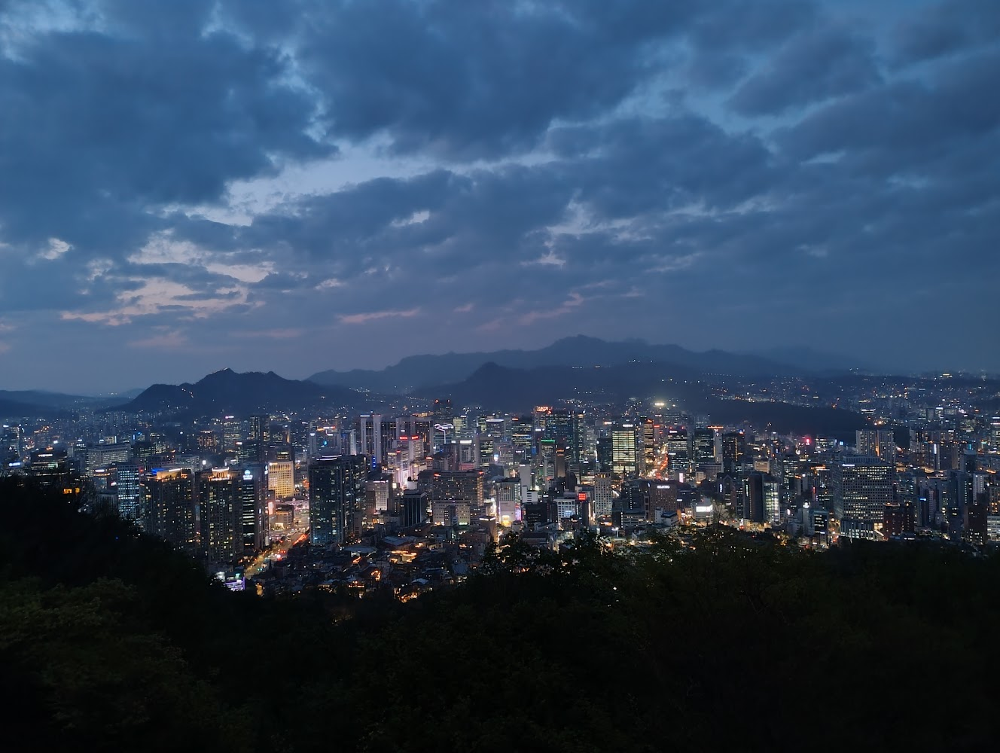Seoul is the capital and a really big city, about the same size as London.
I arrived at Incheon Airport, which is a port city close to Seoul and serves as the international airport for South Korea.
On arrival, I purchased a T-money card and a local SIM card, then made my way to the centre of Seoul using the AREX express train. You have to purchase the tickets from the machine, then it gives you a designated train and seat. The train takes about an hour to get there.
Once I arrived at Seoul Station, it was two metro stops to Myeongdong, where I stayed.
Myeongdong
Myeongdong is one of the tourist hubs. It has a lot of restaurants and shops. After a certain time, there is a night market which sells all sorts of foods. It is okay for snacks, but you can find cheaper and healthier food.
The main attraction in the Myeongdong area is the Namsan Tower. It is on top of a hill within the district, and you can either walk up the hill or take the cable car. The walk is quite pleasant. At the top, there are panoramic views of the city and shops/restaurants where you can buy food.
Myeongdong is within walking distance of many tourist attractions and the city centre.
Palaces
This section of the city has the main tourist attractions, which include several palaces and some museums.
I visited three of the palaces and walked around the parks surrounding them. I found them pleasant and worth seeing. I thought the folk museum was really good and was completely free!
There was a traditional village in this area, which was nice to walk around and have a coffee in one of the gardens where you have panoramic views.
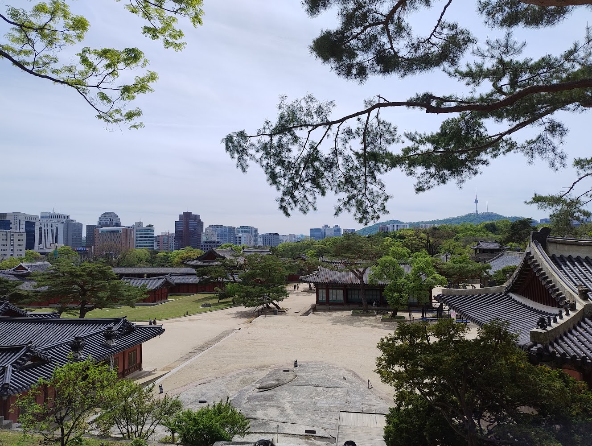Gangnam Style
From the song, Gangnam is a business district in Seoul. Its main attractions are the shopping malls. There is an area by the river where you can walk, people have picnics, and there's a large temple.
I thought it was a nice part of town to walk around. The temple was nice, and there is a Gangnam Style statue. It made my day seeing this.
City Walls
I spent a morning visiting a gate where you could walk around the old city walls. It was enjoyable walking around with views of the city.
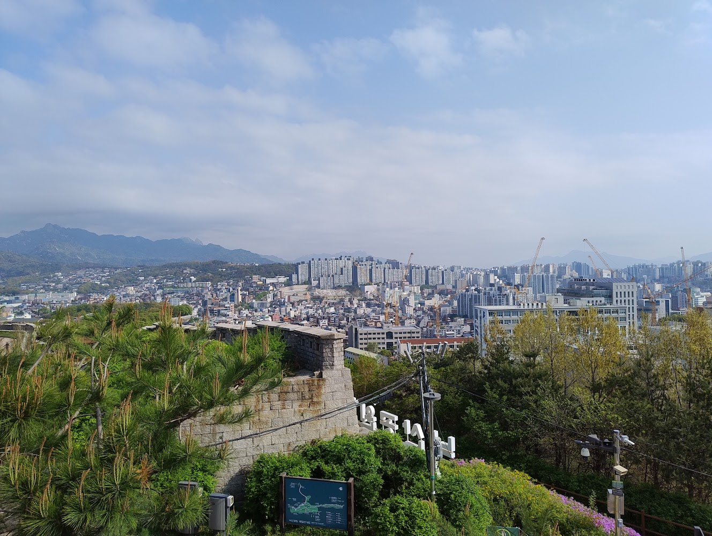Overall Impressions
Seoul is a really good city to visit. There is lots of culture and a lot to do. The things above are just a summary of the touristy highlights, but it's best to just look on Google Maps at interesting locations, take a subway ride there, and look around. There are many vantage points in the city where you get views of modern architecture.
You really can spend days there and only feel like you have just scratched the surface.
Gyeongju
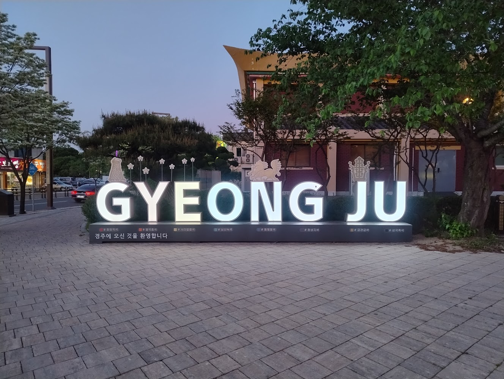Gyeongju is a much smaller historic city in the south, near Busan.
This city has very beautiful parks to walk around and a lot of history, with ancient burial mounds for the Silla kings. These were everywhere, and some of them had been excavated so you could see inside them.
There is a bridge which is lit up at night and is really picturesque.
I loved the parks and the museums — it was fascinating.
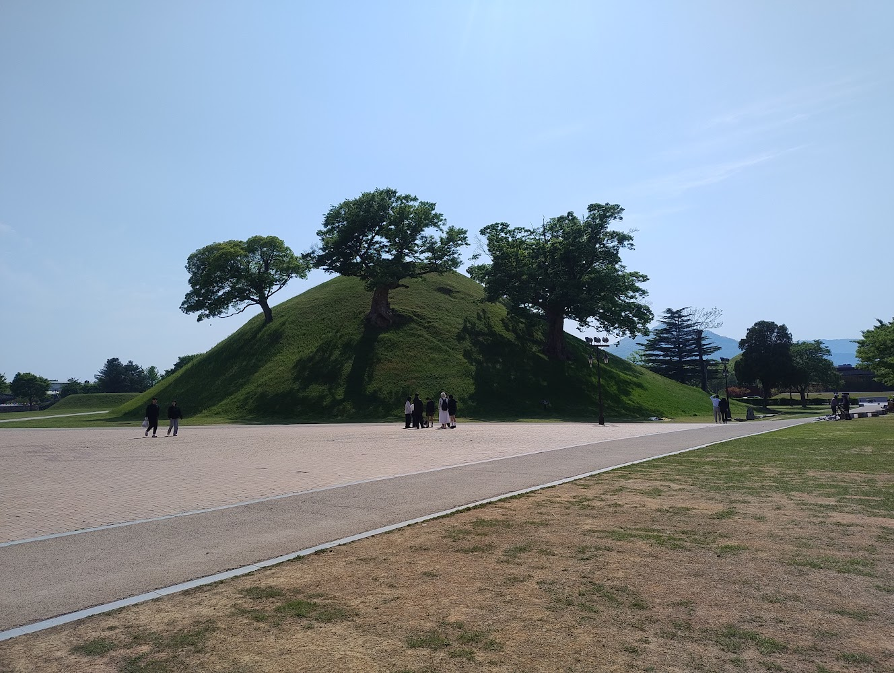There was an area with lots of restaurants, street food, and shops for tourists. I enjoyed walking around here as it had some unusual things.
Day Trips
From Gyeongju, I took the bus to two places.
The first place was a lake nearby. This was okay, but one of the less successful things that I did. The guidebooks say that there are bicycle hire places and you can cycle around the lake. I only found one place — the quality of the bicycle was bad, and I was told I could only go on the road, which didn't have any scenery. I gave up on this and just went back.
The second place was much better. I took the bus to a location just outside the city called Namsan Mountain, with a hiking trail to get to the top. You need about half a day for this, so I set off early.
Once I had found the entrance to the national park, it was easy, with a clear trail leading to the top. I walked all the way to the top. The views were excellent.
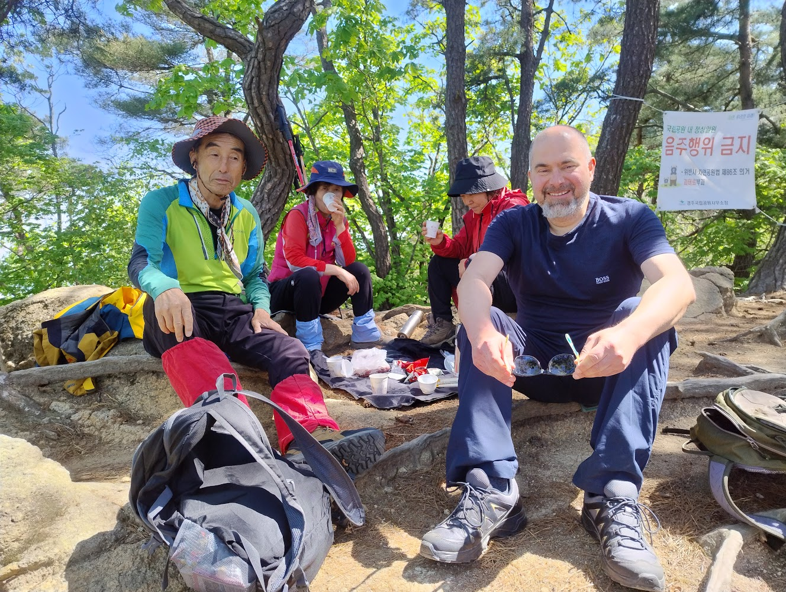Busan
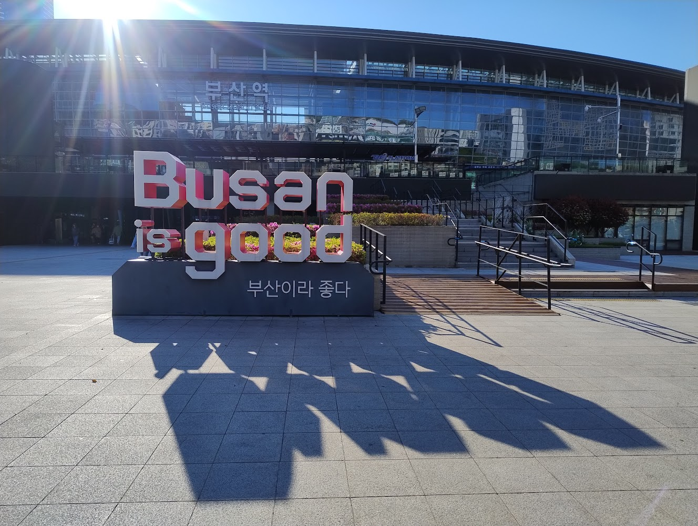Busan was my favourite place. It is the second-largest city in the south. Busan has many beaches along the coastline that you can get to from nearby metro stations.
I thought that most of the beaches were beautiful, and I loved the backdrop of the city tower blocks behind them.
I went to about five of them; each had its different vibe. Some were quiet, and some were very lively with lots of entertainment along the beachfront.
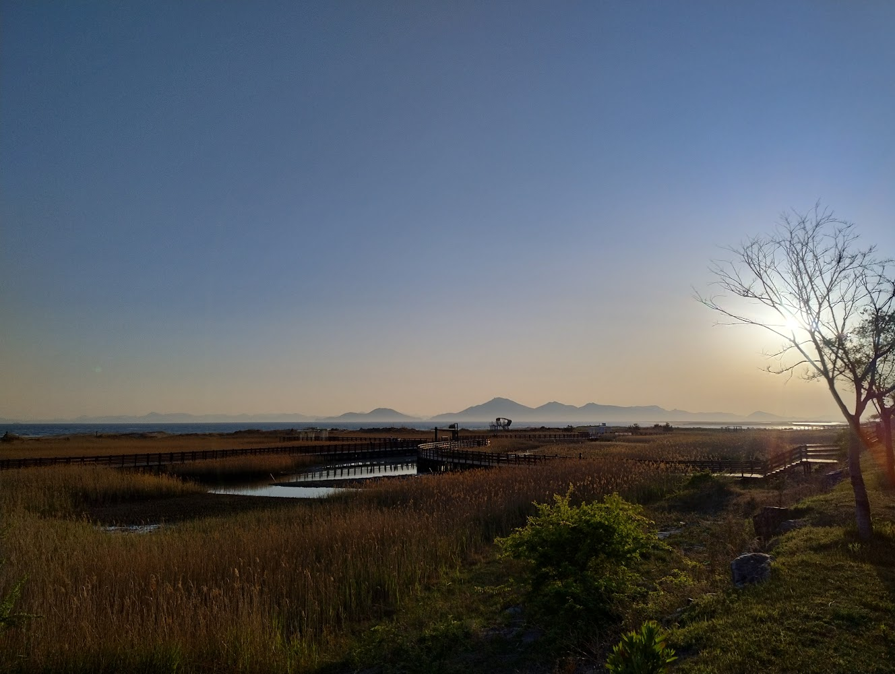Gamcheon Culture Village
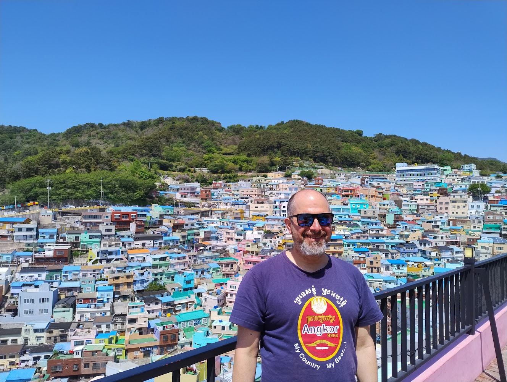Gamcheon Culture Village in Busan, South Korea, is a vibrant, colorful hillside village known for its unique terraced houses, art installations, and stunning views. Originally a settlement for refugees in the 1950s, it has been transformed into a tourist attraction with community art projects and colorful murals.
This area was very touristy, but very pretty and worth visiting. You can spend more than half a day here.
City Parks
There are numerous city parks in Busan that you can reach by public transport and go hiking for a while.
I went to several of these. My favourite was the Igidae Coastal Trail.
This was a walk along a coastal path in Busan which lasted for a couple of hours. There were many beautiful views along the way of small islands and pebble beaches. You could see the city as well towards the end. The path was surrounded by pine tree woodland.
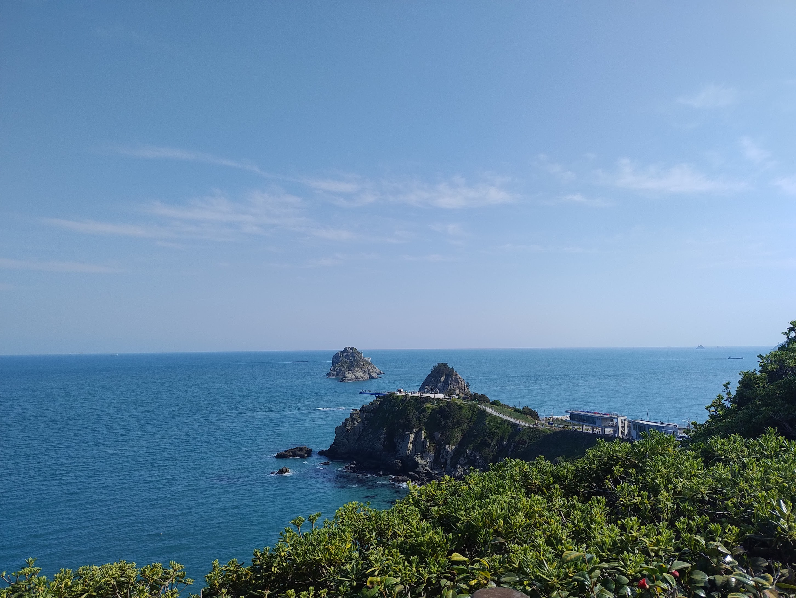Jagalchi Fish Market
There is a metro station called Jagalchi, and the surrounding area is a tourist hub with several museums, the BIFF (Busan International Film Festival) square, and Busan Tower.
I really liked this area as I saved it for the day when it rained because it has mainly indoor activities. I went to the film museum and the Busan National Museum, which had a lot on the history.
The BIFF square was interesting; it had loads of plaques on the floor with film stars and their handprints, like a mini Hollywood.
The fish market was interesting, with loads of live sea creatures on display on the bottom floor. I went to have lunch on the next floor up, which had loads of restaurants. It seemed to be a rip-off though.
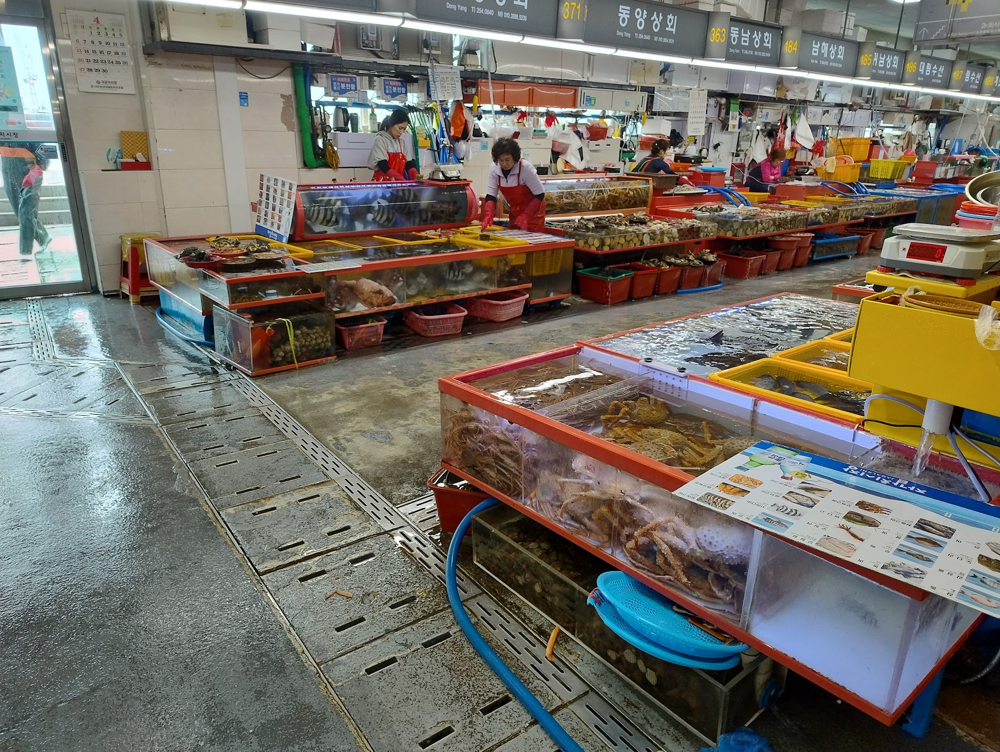Suwon
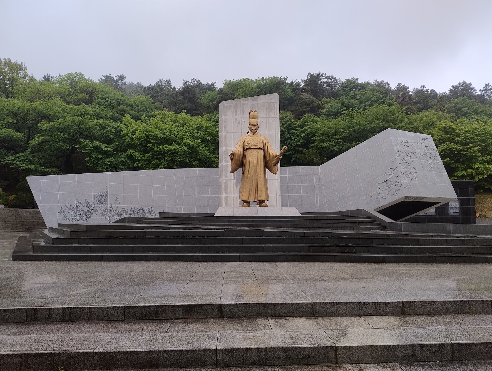This was a day trip from Seoul that I took on the last day. It was an easy trip because you can use the metro system to get to Suwon. It takes about two hours, so I got up really early to make the most of the day.
I mainly visited the main tourist attractions, which were a 10-minute bus ride from the train station. There is a large fortress, and you can walk around the walls. The weather was bad, so I only spent a couple of hours there, but I found it to be quite nice.
On the way back to the train station, there was an interesting market that I looked around for a short time.
At midday, I went to "Mr. Toilet House," which is a toilet museum. The indoor part was closed, but the outdoor area was free to walk around, and it had some amusing displays about the history of toilets in Korea.
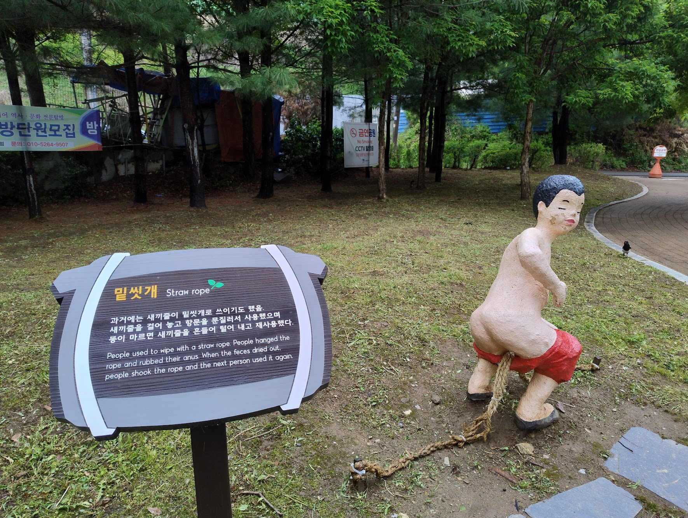DMZ
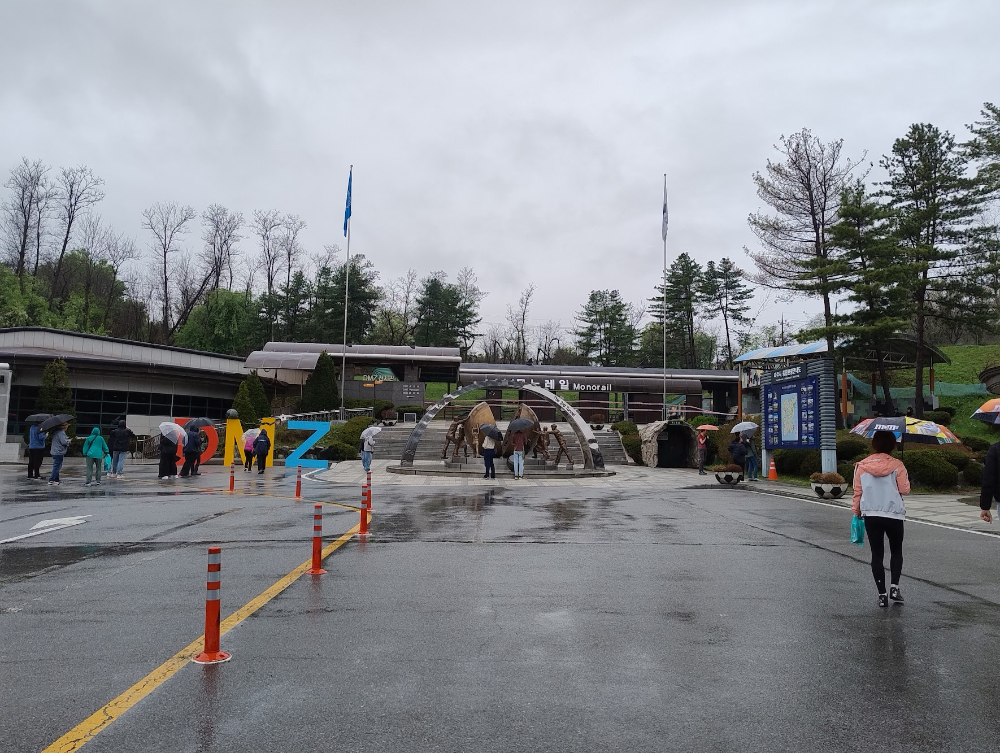From Seoul, I took a tour of the DMZ (Demilitarized Zone), which gives you the experience of getting close to North Korea.
The trip begins at a memorial for the Korean War, which includes some artifacts you can view. There was also a souvenir shop where I bought some North Korean money.
The next stop was an observation deck where, on a clear day, you should be able to see across the border. Unfortunately, the weather was so bad that it was impossible to see more than a few meters, so I only have an idea of what you’re meant to see.
Finally, the bus entered the actual DMZ. We passed through security barriers, showed our passports, and were taken to the 3rd Infiltration Tunnel—a tunnel discovered as part of a planned invasion route. You can walk all the way down to the sealed-off section, where there’s a small window looking into North Korea. It reminded me of something out of the Fallout games.
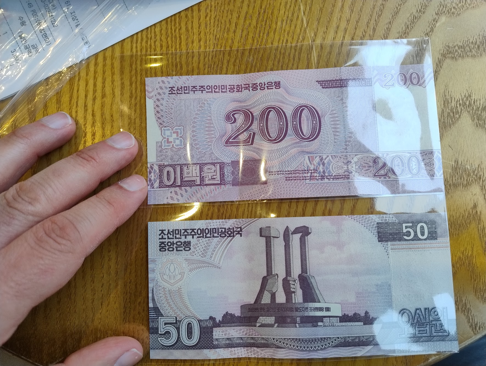